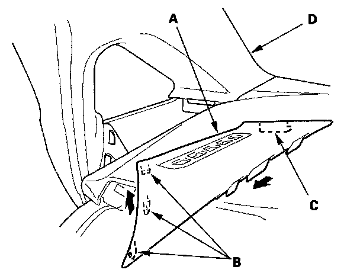

Dashboard Side Trim
Dashboard Side Trim Removal/InstallationNOTE: Take care not to scratch the dashboard and related parts.

1. Remove the dashboard side trim (A).
1. Gently pull up the rear edge to release the rear hooks (B).
2. Pull the trim away to release the front hook (C) from the A-pillar trim (D).
2. lnstall the side trim in the reverse order of removal.